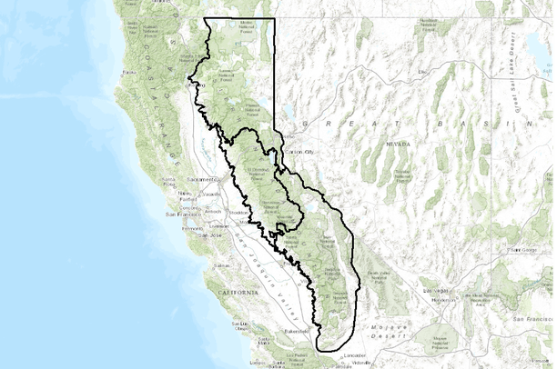

This article explores the influence of historical forest management practices on the present condition of the Sierra Nevada's forests.
Historical Practices and Their Consequences in Sierra Nevada's Forest Management
Over the last hundred years, human activities have dramatically reshaped the forests of the Sierra Nevada, affecting their composition, resilience, and ecological balance. Fire suppression, unsustainable logging, and the abandonment of traditional Indigenous fire management practices have made these forests more prone to wildfires, biodiversity loss, and the effects of climate change. Addressing these challenges requires a renewed commitment to sustainable forest management.
Fire Suppression and Its Legacy
The "10 a.m. Policy" introduced in 1935, which aimed to extinguish all fires by 10 a.m. the day after detection, marked the beginning of widespread fire suppression efforts in the Sierra Nevada. These forests, historically maintained by frequent low-intensity fires, have since accumulated dense undergrowth and high fuel loads, leading to larger and more destructive wildfires. Recent megafires illustrate the unintended consequences of these policies, with widespread ecological and economic costs.
Severe wildfires destroy critical seed sources, degrade soils, and fragment habitats, making forest recovery increasingly difficult. Studies have shown that these intense fires disrupt ecological networks, reducing their complexity and ability to recover.
Logging Practices and Species Composition
During the early 20th century, extensive logging targeted large, fire-resistant trees like Ponderosa pines. This selective removal left forests dominated by less fire-tolerant species such as firs and cedars, which are more vulnerable to fires due to their dense canopies and resinous properties. These changes in species composition have significantly increased fire risks.
Additionally, logging practices created overly uniform forest structures with reduced biodiversity. Combined with fire suppression, these practices have weakened forests, making them more susceptible to pests and drought. Bark beetle infestations, for instance, have caused extensive damage to already stressed tree populations.
Suppression of Indigenous Fire Management

Indigenous peoples in the Sierra Nevada practiced controlled burns for centuries, promoting ecological health and reducing wildfire risks. These cultural burns maintained diverse plant and animal communities and minimized the buildup of flammable materials. However, colonial policies suppressed these practices, removing a vital tool for forest management.
Today, there is growing recognition of the importance of reintegrating Indigenous fire stewardship into modern management strategies. These practices offer valuable insights into maintaining ecological balance and fostering resilience against wildfires.
Pathways to Resilience
To address these challenges, forest management must adopt a more holistic and proactive approach. Strategies like mechanical thinning, prescribed burns, and the revival of Indigenous fire practices have shown promise in reducing fire risks and promoting ecosystem health. For example, combining thinning and prescribed burns has been effective in lowering fuel loads and enhancing species diversity.
Collaboration between state and federal agencies, increased funding for prescribed burn programs, and public education about fire-resilient forests are essential steps forward. Integrating traditional knowledge with modern science can create a sustainable path for restoring the Sierra Nevada’s forests.
Conclusion
The historical impacts of fire suppression, logging, and the neglect of Indigenous practices have left the Sierra Nevada’s forests in a fragile state. However, by learning from past mistakes and fostering innovative and collaborative management approaches, it is possible to restore these forests to a healthier and more resilient state. This work is vital for ensuring that future generations can benefit from the ecological, cultural, and economic value of these iconic landscapes.